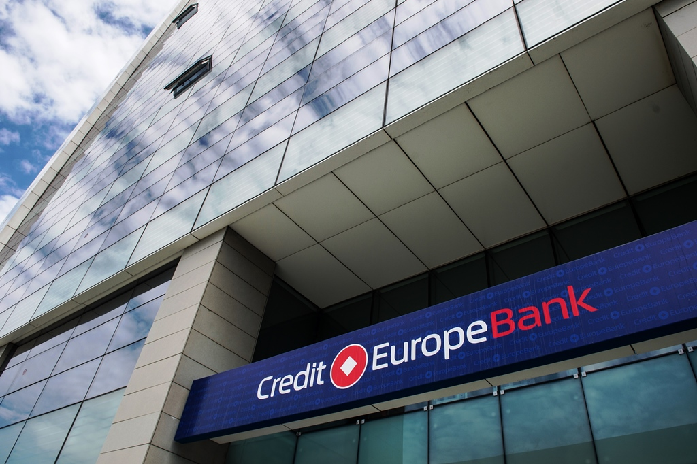
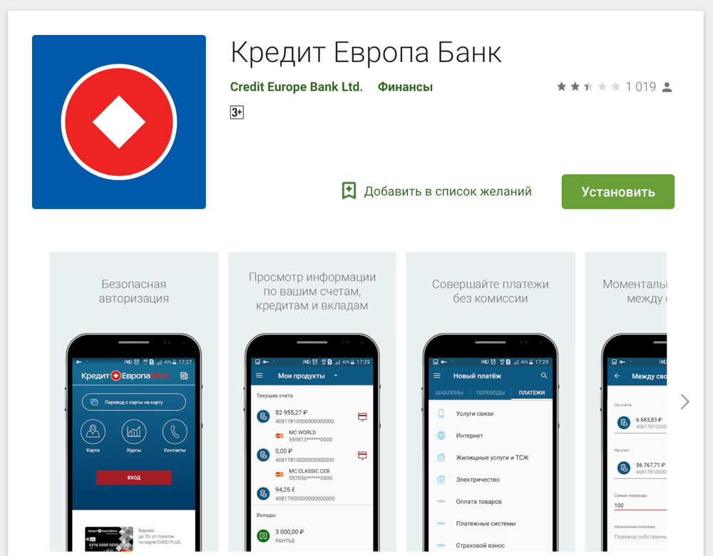

О Банке
Краткая инфомрация
АО «Кредит Европа Банк (Россия)» – российский Банк с иностранным капиталом, основанный в 1997 году,
принадлежит к турецкой финансовой Группе FIBA, осуществляющей свою деятельность в 11 странах мира.

Деятельность Кредит Европа Банка в России сосредоточена в таких городах, как Москва, Санкт-Петербург,
Казань, Екатеринбург, Уфа, Новосибирск, Ростов-на-Дону и других.
Филиальная сеть Кредит Европа Банка насчитывает 42 отделения в 21 городе и 5 часовых поясах РФ,
а также 310 банкоматов и более 24 000 точек продаж (присутствие банка в 2022 году).
Кредит Европа Банк – универсальный банк, оказывающий широкий спектр услуг розничным и корпоративным клиентам,
а также предприятиям малого и среднего бизнеса. На сегодняшний день Банк обслуживает более 6 000 000 клиентов
физических лиц, 5 600 корпоративных клиентов и 15 500 предприятий малого и среднего бизнеса (на 01.01.2023).
Банк занимает лидирующие позиции на рынке кредитных карт, потребительского и автокредитования (на 01.01.2023).
По итогам 2022 года Кредит Европа Банк вошел в топ-100 списка лучших банков России по версии Forbes, а также
в топ-10 Народного рейтинга информационно-аналитического портала banki.ru.
История Банка
- В 1997 был создан «Финансбанк (Москва) А. О.» как банк со 100 % иностранным капиталом. Банк был сосредоточен на обслуживании корпоративных клиентов, большую часть которых составляли турецкие компании, работающие в России.
- В 2000 году банк вышел на рынок потребительского кредитования и стал выпускать собственные пластиковые карты, обслуживая главным образом сотрудников своих корпоративных клиентов.
- В 2001—2003 годах банк существенно расширил свою клиентскую базу и начал активно осваивать рынок потребительского кредитования в России.
- В 2004 году были открыты региональные представительства Банка в Санкт-Петербурге, Казани, Нижнем Новгороде, Ростове-на-Дону, Перми, Уфе и Самаре.
- В 2005 году агентство Moody`s присвоило ЗАО «Финансбанк» международный рейтинг «Ba2». Банк становится участником системы обязательного страхования вкладов (регистрационный номер 690), а также начинает работать с предприятиями малого и среднего бизнеса и запускает программу автокредитования.
- В 2006 году FIBA International Holding продал один из основных своих активов — «Финансбанк» (Турция) Национальному Банку Греции (НБГ). По условиям сделки, права на бренд «Финансбанк» перешли НБГ. В 2006 году банк начал сотрудничество с сетью АШАН. Агентство Moody`s повысило рейтинг банка до уровня «Ba1».
- В 2007 году «Финансбанк» официально меняет своё название на «Кредит Европа банк» (ЗАО).
- В 2008 году банк начал сотрудничество с IKEA. Банк стал участником государственной программы субсидирования автокредитования. Разрабатываются совместные программы с UZ-Daewoo, Hyundai, Chery, Chrysler, ГАЗ, Isuzu.
- В 2010 году банку присвоен рейтинг Fitch Rating «BB-». Банк запускает кобрендинговую программу по выпуску кредитных карт (MEGA CARD) совместно с торговой сетью МЕГА.
- В 2011 году банку присвоен рейтинг «AA+» по национальной шкале, прогноз «стабильный» и «BBB+» по международной шкале, прогноз «стабильный» агентством «Рус-Рейтинг».
- В 2012 - 2013 годах банк вошел в ТОП-5 лидеров на рынке автокредитования в России и начал выпускать кобрендинговую карту Ferrari
- В 2015 году банк начал выпускать флагманскую дебетовую карту CARD PLUS World Mastercard с программой лояльности
- В 2016 - 2017 годах запущен мобильный банк для клиентов-физических лиц и разработана карта CARD CREDIT PLUS
- В 2019 году банк официально меняет свое название на «Кредит Европа Банк (Россия)» (АО).
- В 2020 году банк присоединился к Системе быстрых платежей (СБП), начал выпуск цифровых карт и расширил функциональные возможности мобильного приложения как для физических лиц, так и для бизнеса.
Мобильный банк
Управлять финансами стало намного проще с мобильным приложением Кредит Европа Банка. Оно очень удобно, вам понравится! 🥰

Мобильный банк – это Интернет-банк (личный кабинет), доступ к которому осуществляется через смартфон
с операционной системой Android,
iOS
или Harmony.
Получите быстрый доступ к просмотру информации по Вашим счетам и картам. Оплачивайте мобильный телефон,
интернет и услуги ЖКХ, совершайте переводы со счета в рублях без комиссий!
- О нас
- Контакты
- Курс Валют
- Новости Банка
- Видео о Банке
- Центр клиентской поддержки:
- МТС: 8 916 675 77 57
- Мегафон: 8 926 827 77 57
- Билайн: 8 903 675 77 57
- Теле2: 8 991 875 77 57